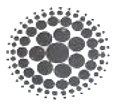
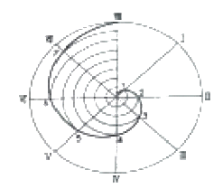
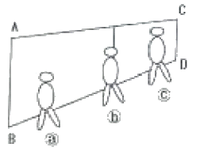
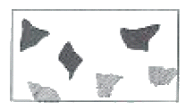
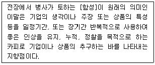
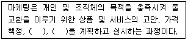
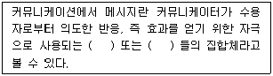

시각디자인기사 (2012-05-20 기출문제)
1과목: 시각디자인론
1. 신문광고의 구성요소를 조형적요소와 내용적요소로 나누어 볼 때, 다음 중 내용적 요소는?
- 일러스트레이션
- 헤드라인
- 코퍼레이트 심벌
- 보더라인
(정답률: 53%)

2. 다음 중 공공 캠페인 포스터와 가장 가까운 의미의 것은?
- 상품광고 포스터
- 사회(계몽) 포스터
- 기업이미지 광고 포스터
- 관광홍보 포스터
(정답률: 84%)
3. 올림픽 경기에서 공식적으로 독자적인 마스코트를 처음 사용하기 시작한 올림픽 경기는?
- 도쿄 올림픽(1964년)
- 멕시코 올림픽(1968년)
- 뮌헨 올림픽(1972년)
- 몬트리올 올림픽(1976년)
(정답률: 53%)
4. 디자인의 조건 중 경제성에 관한 설명으로 틀린 것은?
- 최소한의 시간과 노력으로 최대한의 효과를 얻는 것
- 최대한의 비용으로 최상의 디자인을 하는 것
- 최소한의 비용으로 최대의 효과를 얻는 것
- 최소한의 재료와 노동력으로 최대 기능을 발휘하는 것
(정답률: 57%)
5. 오스본(Alex Osborn)에 의해 1930년대 후반부터 시작된 창조적 아이디어 개발을 위한 방법으로서 광고 아이디어 기획회의에서 보편적으로 널리 사용되는 방법은?
- 시네틱스(Synectics)
- 브레인스토밍(Brainstorming)
- 체크리스트법(Checklists)
- 입출력법(Input-Output)
(정답률: 79%)
6. 다음 중 상표등록을 받을 수 없는 자는?
- 국내에서 상표를 사용하는 자
- 국내에서 상표를 사용하고자 하는 자
- 유증의 경우의 특허심판원직원
- 상속이 아닌 경우의 특허청직원
(정답률: 50%)
7. 시각디자인에서 그래픽의 어원과 관련이 없는 것은?
- 쓰다
- 생각하다
- 그라피코스(graphikos)
- 도식화한다.
(정답률: 40%)
8. 큐비즘(Cubism)에 영향을 받은 몬드리안이 전개한 디자인 사조는?
- 퓨리즘
- 팝아트
- 데 스틸
- 미래파
(정답률: 74%)
9. 기업이 디자인을 비즈니스 활동으로 인식하는 이유는?
- 디자인이 마케팅, 재정, 생산 등과 같이 경영을 필요로 하기 때문
- 디자인이 비즈니스의 목적에 가장 중요하기 때문에
- 엔지니어가 만든 제품을 아름답게 보이기 위하여
- 소비를 장려하고 판매를 촉진하기 위하여
(정답률: 60%)
10. 월간잡지와 같은 지속적인 출판물 제작시 인쇄물의 시각적 질서와 일관성을 유지, 시간을 절약하고 지면에 통일감을 부여하는 레이아웃의 수단은?
- 스탠다드(Standard)
- 그리드(Grid)
- 모듈(Module)
- 폼(Form)
(정답률: 75%)
11. 아이디어 전개법과 그 설명이 틀린 것은?
- 특성열거법: 사물을 구성하고 있는 요소, 부분, 성질 기능의 특성을 열거해 나가면서 아이디어를 찾는 방법
- 결점 열거법: 기존 제품의 결점 발견에서 시작하여 상품들을 개량, 개선하는 방법
- 입출법: 해결목적인 출력상태에서 시작하여 최후에 입력 상태까지의 공백을 연결시키는 방법
- 초점법: 입력의 시작점에서 출력의 도달점을 정하지 않고, 도달점만을 정해 사용하는 방법
(정답률: 44%)
12. 다음 중 다이어그램(Diagram)에 해당되지 않는 것은?
- 스토리에 따른 배경 일러스트레이션
- 열차 시간표와 같이 문자나 숫자로만 이루어진 도표
- 해부학같이 고도의 전문성이 필요한 의학을 위한 양식화된 그림
- 유전자 구조와 같이 눈으로 볼 수 없는 것을 표현한 구조도
(정답률: 48%)
13. 1932년 스탠리 모리슨에 의해 디자인된 대표적인 세리프 서체는?
- 푸트라(Futura)
- 가라몬드(Garamond)
- 타임즈 로만(Times Roman)
- 보도니(Bodoni)
(정답률: 79%)
14. 시각화된 심적 이미지를 구체화 시키는 첫 단계로 나름대로의 생각을 자유롭게 그림과 문자로 시각화시킨 대체로 적고 간략한 그림은?
- Thumbnail Sketch
- Rough Sketch
- Comprehensive
- Mechanical Art
(정답률: 62%)
15. Bauhaus의 이념을 2차 대전 후 우선하여 실질적으로 실천할 수 있었던 국가는?
- 영국
- 미국
- 프랑스
- 이태리
(정답률: 71%)
16. 특정 상품에 대한 고정관념이 있어 브랜드 충성도와 선호도가 높고 반복적, 습관적 구매가 이루어지는 소비자 집단은?
- 가격 적응의 소비자 집단
- 신소비자 집단
- 합리적 소비자 집단
- 관습적 소비자 집단
(정답률: 77%)
17. 다음 중 저작권법에서 말하는 저작물에 해당되지 않는 것은?
- 음악저작물
- 컴퓨터프로그램저작물
- 건축물
- 자동차디자인
(정답률: 29%)
18. 잡지편집에서 일러스트레이션의 블리드(Bleed) 처리효과와 관련이 없는 것은?
- 인쇄물의 마무리크기(Trim Size)보다 크게 인쇄하여 재단한다.
- 조형요소가 지면 밖으로 확장돼 보인다.
- 레이아웃에 시각적 질서를 준다.
- 일러스트 및 지면을 크고 넓어 보이게 한다.
(정답률: 56%)
19. 다음 중 바우하우스 운동에서 볼 수 있는 작품의 특징으로 가장 적합한 것은?
- 유연하고 유동적인 장식적 곡선 사용
- 자연대상을 기하형태로 환원, 면과 입체로 재구성
- 기하학적인 장식요소를 대칭형으로 구성
- 단순 명쾌한 형태와 기능적 구조를 존중
(정답률: 75%)
20. 유겐트스틸에 대한 설명으로 틀린 것은?
- 프랑스 파리에서 시작한 디자인 사조이다.
- 뮌헨에서 발행한 미술잡지 [유겐트]에서 시작하여 유행하였다.
- 연령을 초월한 청춘양식이라고 할 수 있다.
- 식물적 요소인 꽁과 잎 등의 곡선을 추상화, 양식화 하였다.
(정답률: 45%)
2과목: 조형심리학
21. 육면체의 한 면이 화면에 평행으로 놓여 있어 수평 및 수작의 모소리는 연장하더라도 수평이 되나, 깊이 방향은 수평선상의 어느 한 점에 모이게 되는 투시도법은?
- 평행투시
- 유각투시
- 사각투시
- 직선투시
(정답률: 60%)
22. 리듬(Rhythm)과 관련이 없는 것은?
- 반복(Repetition)
- 점이(Gradation)
- 대칭(Symmetry)
- 방사(Radiation)
(정답률: 50%)
23. 결핍된 것을 충족시켜 "동질정체(homeostasis)" 상태로 회귀하려는 심리적 상태는?
- 지각
- 감각
- 인식
- 욕구
(정답률: 69%)
24. 원근에 의한 공간표현 방법 중 직선 원근법에 대한 설명으로 옳은 것은?
- 화면에서 평행선이 뒤로 계속될 때 그것은 한 점으로 모아져 수편선에서 만나는 것처럼 보인다.
- 동시에 여러 각도에서 하나의 인물이나 대상물을 바라보는 것이다.
- 하나의 주제가 보이는 사람을 향해 직접 부각될 때 생겨나는 시각적 이미지이다.
- 깊이를 나타내기 위한 색채와 명암의 사용을 의미한다.
(정답률: 71%)
25. 치수기입 시 지름을 나타내는 기호는?
- ø
- R
- T
- C
(정답률: 74%)
26. 다음 중 가현운동(apparent movement)과 관계가 없는 것은?
- 도지반전도형
- 영화
- 네온사인
- 컴퓨터 모니터
(정답률: 77%)
27. 아이젠크(Eysenck)와 냅(Knapp) 등의 연구에서 발견된, 성격과 선호색감의 상관관계에 대한 내용으로 틀린 것은?
- 정서적 자제력이 충분한 사람은 채도가 높은 유채색을 선호했다.
- 정서적 자제력이 부족한 사람은 자극적인 색을 선호했다.
- 성취동기가 낮을수록 빨강, 노랑 같은 따뜻한 색을 선호했다.
- 성취동기가 높을수록 파랑, 남색 같은 차가운 색을 선호했다.
(정답률: 53%)
28. 대상의 밝기정보를 처리하는 망막상의 세포는?
- 원추체
- 간상체
- 수정체
- 초자체
(정답률: 73%)
29. 오스굿의 SD법에서 심리적 요인(인자)에 해당되지 않는 것은?
- 평가성 인자
- 역능성 인자
- 활동성 인자
- 심미성 인자
(정답률: 6%)
30. 다음 그림을 설명한 것 중 가장 옳은 것은?

- 작은 점 주변의 큰 원들도 점으로 느껴진다.
- 점은 많이 모이면 모일수록 입체로 느껴진다.
- 점은 크기가 변함에 따라 선으로 느껴진다.
- 점은 반드시 점과 점 사이의 일정한 간격을 유지하여야만 점으로 느껴진다.
(정답률: 45%)
31. 다음 곡선을 무엇이라 하는가?

- 사이클로이드 곡선
- 고.저 트로코이드 곡선
- 아르키메대스 와선
- 인벌류우트 곡선
(정답률: 65%)
32. 원근감을 고려해서 볼 때 다음 그림에 대한 설명으로 옳은 것은?

- ⓐⓑⓒ는 같은 키의 사람이다.
- ⓐⓑⓒ 중 ⓒ가 가장 크다.
- ⓐⓑⓒ 중 ⓒ가 가장 가까운 거리에 있다.
- AB의 거리보다 CD의 거리가 짧다.
(정답률: 60%)
33. 부분과 부분 또는 부분과 전체 사이의 유사성에 기초한 디자인의 원리는?
- 변화
- 강조
- 대비
- 조화
(정답률: 78%)
34. 파르테논 신전은 전체형태가 당시 군사 대형을 본뜬 것을 시각적으로 나타낸 도리아 양식으로 간소하나마 장중미와 정온함을 나타내고 있는 디자인이라 볼 수 있다. 이에 주로 적용된 조형적 비례는?
- 등비수열
- 등차수열
- 루트비
- 황금분할
(정답률: 69%)
35. 어느 길이를 1로 하여 이를 기준으로 1/1, 1/2, 1/3, 1/4 ..... 등으로 나누어 가는 형태의 수열은?
- 조화 수열
- 등비 수열
- 피보나치 수열
- 펠의 수열
(정답률: 24%)
36. 다음 중 모아레(moire)효과가 가장 적게 일어나는 것은?
- 동심원들로 구성된 패턴
- 등간격의 직선들로 구성된 패턴
- 규칙적으로 구성된 점 패턴
- 각각의 자유 곡선들로 구성된 패턴
(정답률: 65%)
37. 다음 그림과 관련이 있는 게슈탈트 법칙은?

- 근접의 법칙
- 유사의 법칙
- 폐쇄의 법칙
- 연속의 법칙
(정답률: 50%)
38. 달리는 차안에서 바라보는 가로수가 관찰자의 이동과는 무관하게 변함없이 서 있음을 알게 하는 지각원리는?
- 크기 항상성
- 모양 항상성
- 색채 항상성
- 위치 항상성
(정답률: 75%)
39. 시각물을 거울에 투영시킬 경우, 외양도 바뀌고, 의미도 상실되는 이유가 아닌 것은?
- 왼쪽에서 오른쪽으로 읽혀지기 때문이다.
- 어떤 시각물 속에 대상의 오른쪽이 더 무겁게 보이기 때문이다.
- 거울에 반사된 빛이 실제와 다르기 때문이다.
- 제작자의 의도한 의미가 변질되기 때문이다.
(정답률: 44%)
40. 다음 중 평면적인 예술형태에서 깊이감이나 공간감을 나타내고자 할 때 사용되는 표현방법과 거리가 먼 것?
- 중첩
- 크기
- 원근감
- 통일
(정답률: 71%)
3과목: 광고학
41. 스토리보드와 연출 콘티를 가장 옳게 설명한 것은?
- 스토리보드는 광고대행사에서, 연출콘티는 방송국에서 사용하는 용어이다.
- 스토리보다는 내용이나 비주얼의 흐름을 스케치한 것이고 연출콘티는 스토리보드를 영상으로 촬영하기 위한 설계도이다.
- 스토리보다와 연출콘티는 다 같은 것이다.
- 스토리보다는 비주얼 중심이고 연출콘티는 카피 중심이다.
(정답률: 65%)
42. 단순한 판매촉진 활동뿐만이 아니라, 다양한 광고, 홍보, 이벤트, 세일즈맨 활동 등 변화하는 시대에 맞춘 마케팅 전략까지 포함된 의미의 것은?
- 세일즈 프로모션(Sales Promotion)
- 프리미엄(Premium)
- 콘테스트(Contest)
- 노벨티(Novelty)
(정답률: 65%)
43. 대화의 형식을 갖춘 의미으 전달을 뜻하며 전달자는 동시에 수용자의 역할, 수용자는 동시에 전달자의 역할을 하는 커뮤니케이션 방법은?
- 일방적 커뮤니케이션
- 쌍방적 커뮤니케이션
- 다면적 커뮤니케이션
- 다차원적 커뮤니케이션
(정답률: 71%)
44. 소비자 태도 형성에는 과거경험, 가족, 동료집단, 매체, 개성 등이 영향을 미친다. 다음 중 과거경혐의 예로 볼 수 있는 것은?
- 해당 제품의 샘플을 써본 일이 있다.
- 할인 쿠폰을 나눠준다는 소식을 들었다.
- 새로 나온 상품을 좋아한다.
- 우리 동네에는 ㄴ회사 대리점이 없다.
(정답률: 79%)
45. 다음 중 보디카피를 읽게 하려는 점에서는 강력하지만 경쟁적 측면에서 약한 헤드라인 작성방법은?
- 제품의 이점을 위주로 하나 상품명이 생략된 헤드라인
- 제품의 형태에 바탕을 두고 상품명이 생략된 헤드라인
- 제품의 이점을 위주로 하고 상품명이 제시된 헤드라인
- 제품의 특징에 바탕을 두고 상품명이 제시된 헤드라인
(정답률: 38%)
46. 상품의 구매시점에서 점두 또는 점내의 설치된 광고로 윈도우, 포스터, 포장 등에 의한 광고는?
- 소매점 광고
- P. R 광고
- P.O.P 광고
- 옥외 광고
(정답률: 71%)
47. 카피에 둘러싸인 듯한 일러스트를 한쪽 끝에 배치하여 광고 전체를 강조한 레이아웃은?
- 몬드리안형(Mondrian Layout)
- 픽처 윈도우형(Picture Window Layout)
- 프레임형(Frame Layout)
- 실루엣형(Silhouette Art Layout)
(정답률: 34%)
48. 다음 설명의 정의로 옳은 것은?

- 헤드라인(Headline)
- 보디카피(Body Copy)
- 슬로건(Slogan)
- 캡션(Caption)
(정답률: 69%)
49. 광고 카피의 구성요소가 아닌 것은?
- slogan
- body copy
- borderline
- headline
(정답률: 60%)
50. 광고의 마케팅 전략을 수립하는데 주목해야 할 요소로 거리가 먼 것은?
- 상품의 성장단계
- 경쟁환경
- 소비자층
- 제품의 생산공정
(정답률: 74%)
51. 1960년 이후 미국 마케팅 협회에서는 마케팅을 다음과 같이 정의하였다. ( )안에 들어갈 적당한 단어는?

- 판매촉진, 유통(배급)
- 소매점 확보, 유통(배급)
- 판매촉진, 커뮤니케이션
- 소매점 확보, 커뮤니케이션
(정답률: 65%)
52. 레이아웃이 갖춰야 할 조건으로 거리가 먼 것은?
- 가독성
- 주목성
- 통일성
- 장식성
(정답률: 72%)
53. 브랜딩(branding)에 대한 설명으로 옳은 것은?
- 제품을 만드는 회사의 이미지를 구축하는 것
- 제품의 독특한 이름과 이미지를 구축하는 것
- 독특한 패키지 이미지를 개발하는 것
- 우수한 성능의 제품을 개발하는 것
(정답률: 37%)
54. 프랑크푸르트 학파의 미디어론은 자본주의 사회에 대한 문화비평의 일환으로 설명된다. 프랑크푸르트 학파의 대표적인 학자는?
- 고프만(E.Goffman)
- 알튀세르(L.Althusser)
- 아도르노(T.W,Adorno)
- 보드리야르(J.Baudrilllard)
(정답률: 59%)
55. 시청률(Rating) 이란?
- 한 사람이 하루에 시청한 양
- 주어진 시간에 전체 TV 보유세대 중 시청세대의 비율
- 1주일간 시청한 양
- 한 가족이 하루에 시청한 양
(정답률: 69%)
56. 포지셔닝 전략을 적용할 때 선행되어야 하는 것은?
- 시장세분화
- 효과측정
- 매체조사
- 비용절감
(정답률: 64%)
57. 텔레비전(영화)의 화상 신호를 점차 약하게 하여 화면상의 화상을 점점 흐리게 하고 결국에는 소거하는 연출상의 한 수법은?
- F.I (Fade In)
- F.O (Fade Out)
- C.O (Cut Out)
- DISS(Dissolve)
(정답률: 81%)
58. TV-CM 제작 시에 제품을 실제로 사용하는 상황을 그대로 제시하는 기법은?
- 데몬스트레이션(demonstration)
- 테스티모니얼(testimonial)
- 슬라이스 오브 라이프 (slice of life)
- 프레젠트(present) 기법
(정답률: 50%)
59. 니치 마케팅(Niche Marketing) 이란?
- 대다수의 기업이 못보고 넘기거나 무시했던 틈새시장을 표적으로 하여 행하는 마케팅
- 영리를 목적으로 하지 않고 공공의 익익을 목적으로 행하는 마케팅
- 공포심, 수치심, 죄의식 등 부정적 내용을 강조하여 소비자를 설득하기 위해 행하는 마케팅
- 언어나 문자를 사용하지 않고 신체언어, 언어표정, 눈 접촉, 몸짓 등의 비언어적인 행위로 메시지를 전달하는 마케팅
(정답률: 63%)
60. 다음 ( )안에 알맞은 것은?

- 의미
- 제스추어
- 징표
- 기호
(정답률: 43%)
4과목: 색채학
61. 실제의 위치보다 가깝게 있는 것처럼 보이는 색을 뜻하는 것은?
- 후퇴색
- 수축색
- 무채색
- 진출색
(정답률: 89%)
62. 영,헬름흘츠 색지각설의 3원색은?
- 빨강(Red), 녹색(Green), 파랑(Blue)
- 시안(cyan), 마젠타(magenta), 노랑(yellow)
- 흰색(white), 회색(gray), 검정(black)
- 빨강(red), 노랑(yellow), 파랑(blue)
(정답률: 83%)
63. NCS 표기법의 "S2030-Y90R"에 대한 설명 중 틀린 것은?
- S는 두 번째 판을 의미한다.
- 20%의 검정 30%의 유채색도이다.
- YR의 혼합비율로 90%의 빨강 색도를 띤 노란색이다.
- 90%의 노란 색도를 띤 빨간색을 뜻한다.
(정답률: 58%)
64. 색채조화에 관한 설명 중 틀린 것은?
- 동일, 유사조화는 강렬한 느낌을 준다.
- 보색배색은 색상대비가 크다.
- YR의 혼합비율로 90%의 빨강 색도를 띤 노란색이다.
- 보색배색의 눈부심 현상을 없애기 위해서는 간격을 준다.
(정답률: 88%)
65. 다음 눈의 구조적인 기능 설명 중 틀린 것은?
- 간상체는 주로 어두운 빛에 대한 감도는 높고 색을 구별 못한다.
- 수정체는 빛을 굴절시켜서 망막에 이르는 상을 조절한다.
- 맹점은 중추를 통하는 지점에 시세포가 없어서 여기서 모인 상을 볼 수 없는 지점을 말한다.
- 추상체는 주로 망막의 중심에서 벗어난 주변에 분포한다.
(정답률: 75%)
66. 다음 중 포토샵의 Color Picker에서 빨강을 표현하는 색채시스템이 아닌 것은?
- R=255, G=0, B=0
- H=0, S=100%, B=100%
- C=0%, M=99%, Y=100%, K=0%
- L=100, a=100, b=0
(정답률: 43%)
67. 채도에 관한 설명 중 옳은 것은?
- 채도는 흰색을 섞으면 높아지고 검정색을 섞으면 낮아진다.
- 채도는 색의 선명도를 나타낸 것으로 무채색을 섞으면 낮아진다.
- 채도는 색의 밝은 정도를 말하는 것이며, 유채색끼리 섞으면 높아진다.
- 채도는 그림물감을 칠했을 때 나타나는 효과이며, 흰색을 섞으면 높아진다.
(정답률: 80%)
68. 다음 중 노란색과 배색하였을 때 가장 부드러운 느낌으로 조화되는 색은?
- 회색
- 빨강
- 보라
- 남색
(정답률: 70%)
69. 오륜기에서 유럽을 상징하는 색은?
- 녹색
- 황색
- 적색
- 청색
(정답률: 59%)
70. 색 교정, 색 혼합작업을 정확하게 수행하기 위해서는 어떤 시세포가 작용할 수 있는 시각상태로 만들어야 하는가?
- 추상체체
- 간상체
- 수평세포
- 잘난체
(정답률: 60%)
71. 먼셀의 표색기호 5G 5/8에 대한 설명 중 옳은 것은?
- 색상 5G, 채도 5, 명도 8
- 색상 5G, 명도 5, 채도 8
- 명도 5G, 색상 5, 채도 8
- 채도 5G, 명도 5, 색상 8
(정답률: 87%)
72. 백화점에서 산 물건을 밖에서 보면 다른 색으로 느껴질 때가 있다. 이는 광원의 어떠한 성질 때문인가?
- 연색성
- 항상성
- 대비현상
- 푸르킨예 현상
(정답률: 60%)
73. 미국의 색채학자 저드가 주장하는 색채조화의 4가지에 해당되는 것은?
- 동류성 - 비모호성 - 친근성 - 합리성
- 질서성 - 친근성 - 동류성 - 명료성
- 조인성 - 수원성 - 남한산성 - 구성애의 아름다운 성
- 상대성 - 합리성 - 예술성 - 객관성
(정답률: 54%)
74. 다음 중 모든 디지털화된 이미지의 기본적 색채 특징이 아닌 것은?
- 해상도(resolution)
- 트루컬러(true color)
- 비트깊이(bit depth)
- 컬러모델(color model)
(정답률: 28%)
75. 병치혼합은 다음 중 어떤 화가의 작품에 주로 사용되었는가?
- 피카소
- 뭉크
- 달리
- 쇠라
(정답률: 53%)
76. 다음 중 프르킨예 현상으로 밝은 곳에서 가장 밝게 느껴지는 색은?
- 노랑
- 파랑
- 보라
- 청록
(정답률: 19%)
77. 무채색 계통의 색의 온도감의 요인으로 가장 강하게 작용하는 것은?
- 색상
- 채도
- 명도
- 순도
(정답률: 65%)
78. 다음 중 글자가 가장 가늘게 보이는 배색은?
- 노랑 배경색 위의 파랑 글자
- 검정 배경색 위의 연두 글자
- 진회색 배경색 위의 흰 글자
- 녹색 배경색 위의 노랑 글자
(정답률: 50%)
79. 다음 중 가장 가벼운 느낌을 주는 배색은?
- 녹색 – 검정
- 주황 - 노랑
- 빨강 – 파랑
- 청록 - 녹색
(정답률: 82%)
80. 4도 오프셋 인쇄에 적용된 색채 혼합의 원리는?
- 감법혼색과 가법혼색
- 병치혼합과 가법혼색
- 감법혼색과 병치혼색
- 연속혼색과 감법혼색
(정답률: 64%)
5과목: 사진 및 인쇄제판론
81. 정면 후 판재의 표면은 산화하기 쉽고 지방 등의 불순물이 부착되기 쉬워 이를 방지하기 위하여 아연판재의 산화방지제로 사용되는 것은?
- 크로낙 용액
- 브루낙 용액
- 아라비아 고무
- 에치(etch)액
(정답률: 53%)
82. 인쇄 판면이 유연하여 탄력이 있으므로 종이나 헝겊처럼 유연한 소재뿐만 아니라 유리, 금속을 비롯한 딱딱한 판자나 성형물의 면에 대해서도 거부감 없이 접착인쇄를 할 수 있는 인쇄 방식은?
- 볼록판 인쇄
- 그라비어 인쇄
- 오프셋 인쇄
- 스크린 인쇄
(정답률: 77%)
83. 종이의 원료인 목재펄프의 기본 성분이 아닌 것은?
- 셀룰로오스(cellulose)
- 리그니(lignin)
- 수지(PVA)
- 헤미셀룰로오스(hemicellulose)
(정답률: 34%)
84. 인공조명을 사용할 때 부드러운 조명효과를 내기 위한 용구가 아닌 것은?
- 스폿 램프
- 플러드 램프
- 소프트 박스
- 트레이싱 페이퍼
(정답률: 75%)
85. 컬러 네거티브 필름의 감광 유제층과 그에 따른 발색층이 옳게 연결된 것은?
- Blue 감광 유제층 - Cyan 발색층
- Green 감광 유제층 - Magenta 발색층
- Red 감광 유제층 - Yellow 발색층
- Black 감광 유제층 - Green 발색층
(정답률: 77%)
86. 현상액으로 현상처리를 한 후 필름에 남아있는 미노광된 할로겐화은을 용해, 제거하는 과정은?
- 중간정지
- 정착
- 수세
- 수적방지
(정답률: 53%)
87. 가이드 넘버(GN)가 24인 스트로보로 3m 거리에 피사체를 촬영한다면 적당한 조리개 값은?
- 가 f/2
- f/4
- f/8
- f/22
(정답률: 75%)
88. 다음 중 카메라의 셔터가 하는 주된 역할은?
- 거리 조절
- 입자 조절
- 심도 및 감도 조절
- 빛의 양 조절
(정답률: 74%)
89. 35mm 카메라에서 대형카메라의 무브먼트 효과를 낼 수 있으며, 사물의 왜곡조절이 가능한 렌즈는?
- 표준 렌즈
- 줌 렌즈
- 광각 렌즈
- 시프트 렌즈
(정답률: 30%)
90. 스튜디오 촬영에서 피사체의 조명비를 4:1로 조절하려고 한다. 주광원이 f/16일 때 보조광원의 밝기는?
- f/5.6
- f/8
- f/11
- f/16
(정답률: 57%)
91. 다음 조리개 중 피사계 심도가 가장 깊은 것은?
- f/22
- f/8
- f/4
- f/2.2
(정답률: 75%)
92. 특수 인화기법의 하나로 흰선과 검은선이 피사체 윤곽에 나타나 조각의 부조(浮彫)를 보는 것과 같은 효과를 내는 사진은?
- 포토그램
- 포토 몽타쥬
- 디포메이션
- 릴리프 포토
(정답률: 29%)
93. 평판의 판재가 갖추어야 할 조건으로 틀린 것은?
- 신축이 적고, 경도가 적당할 것
- 모랫발을 쉽게 세울 수 있는 것
- 화학처리에 의한 제판에 적당하고, 수정이나 불감지화가 쉬울 것
- 현상 후 잔반응이 많을 것
(정답률: 84%)
94. 망원렌즈에 관한 옳은 설명은?
- 화각이 넓다.
- 화상이 작아진다.
- 이미지가 왜곡된다.
- 피사계 심도가 얕아진다.
(정답률: 42%)
95. 다음 약품 중 현상 주약에 해당되는 것은?
- 황산바륨
- 아황산나트륨
- 벤조트리아졸
- 하이드로퀴논
(정답률: 59%)
96. 표지를 속장보다 조금 크게 만들고 속장을 실로 꿰매어 제책하는 방식으로 고급서적이나 사전류에 주로 사용되는 것은?
- 호부장
- 풀매기
- 따로 붙이기
- 양장
(정답률: 77%)
97. CEPS(color electronics prepress system)의 기능 중 화상의 수정 기능이 아닌 것은?
- 도림합성
- PS판 현상
- 에어브러시
- 거울 효과
(정답률: 25%)
98. 인쇄기계의 발달과정을 옳게 나타낸 것은?
- 평압식 → 윤전식 → 원압식
- 윤전식 → 평압식 → 원압식
- 평압식 → 원압식 → 윤전식
- 원압식 → 평압식 → 윤전식
(정답률: 79%)
99. 인화 시 노광을 주는 동안 사진의 일부분에 빛을 차단하여 원하는 인화를 얻는 방법은?
- 버닝
- 다징
- 증감
- 감감
(정답률: 50%)
100. 다음 중 PS판의 특징에 대한 설명으로 틀린 것은?
- 처리공정이 간단하다.
- 품질이 안정되어 있다.
- 재현성이 우수하다.
- 그라비어 제판에 비해 가격이 비싸다.
(정답률: 82%)